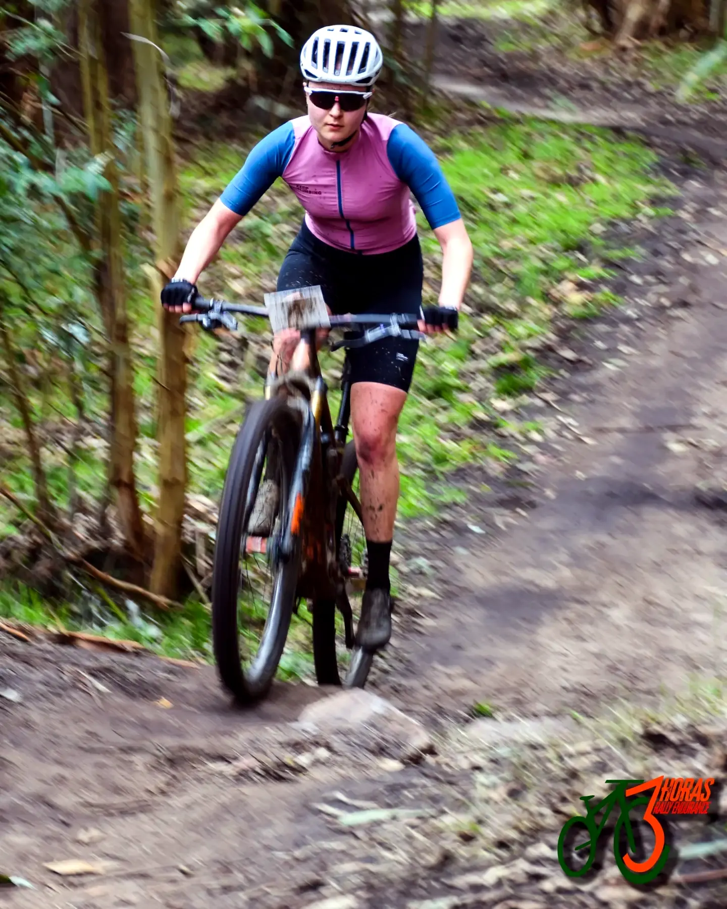

Desafío de las Tres Cruces
Ayacucho. 14 ediciones con clasificación en esta web y 2.154 corredores clasificados en total.

Corredores por edición
Buscate
Todas las ediciones
| Edición | Fecha | Clasificados | Primero en la general | Tiempo |
|---|---|---|---|---|
| 14º Desafío de las Tres Cruces | 10 de agosto de 2025 | 95 | Gonzalez R. Juan Cruz | 1:30:16 |
| La Revancha al Desafío de las Tres Cruces Copa Top Bikes | 6 de abril de 2025 | 167 | Giuliano Cristian | 1:14:12 |
| 13er. Desafío de las Tres Cruces | 11 de agosto de 2024 | 298 | ||
| 12º Desafío de las Tres Cruces | 6 de agosto de 2023 | 251 | Odriozola L. Matias | 1:33:39 |
| La Revancha de las Tres Cruces | 6 de noviembre de 2022 | 115 | Giuliano Cristian / Aiello Maximiliano | 1:36:07 |
| 11º Desafío de las Tres Cruces | 28 de agosto de 2022 | 224 | Romero Juan Pablo | 1:24:25 |
| 10º Desafío de las Tres Cruces | 22 de agosto de 2021 | 263 | Arancedo Joaquin / Jauregui Jose | 01:10:28 |
| 9º Desafío de las Tres Cruces | 8 de septiembre de 2019 | 63 | Gimenez Romina / Lopez Laura | 01:29:55 |
| 8vo. Desafío de las Tres Cruces | 9 de junio de 2019 | 143 | Gundel Juan | 01:25:43 |
| 7mo. Desafío de las Tres Cruces | 10 de junio de 2018 | 72 | Scatt-Optitech | 1:28:28 |
| 6to. Desafío de las Tres Cruces | 4 de junio de 2017 | 119 | Giuliano Cristian / Franqui Sergio | 1:25:53 |
| 5to. Rally Bike Desafío de las Tres Cruces | 11 de septiembre de 2016 | 113 | Aiello Maximiliano (2º Gral) | 1:19:09 |
| 4to. Desafío de las Tres Cruces | 13 de septiembre de 2015 | 103 | Di Gregorio Leandro | 1:16:27 |
| Desafío de las Tres Cruces | 14 de septiembre de 2014 | 128 | Recalde Ivan | 01:39:03 |